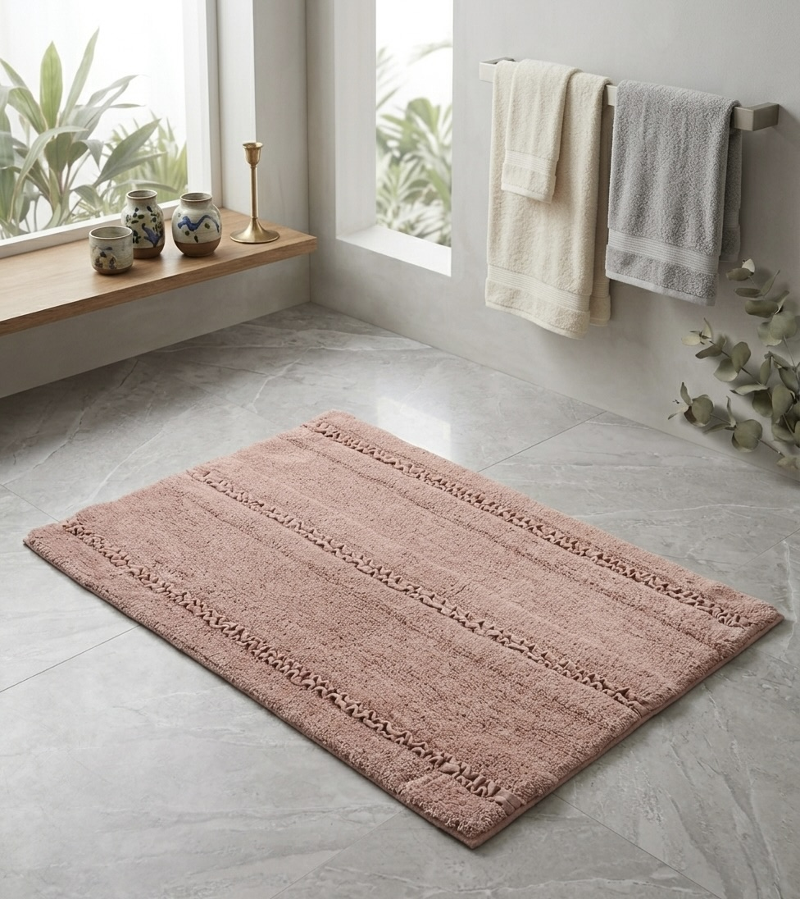
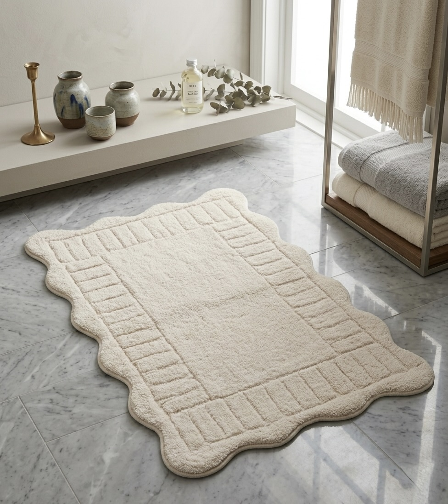
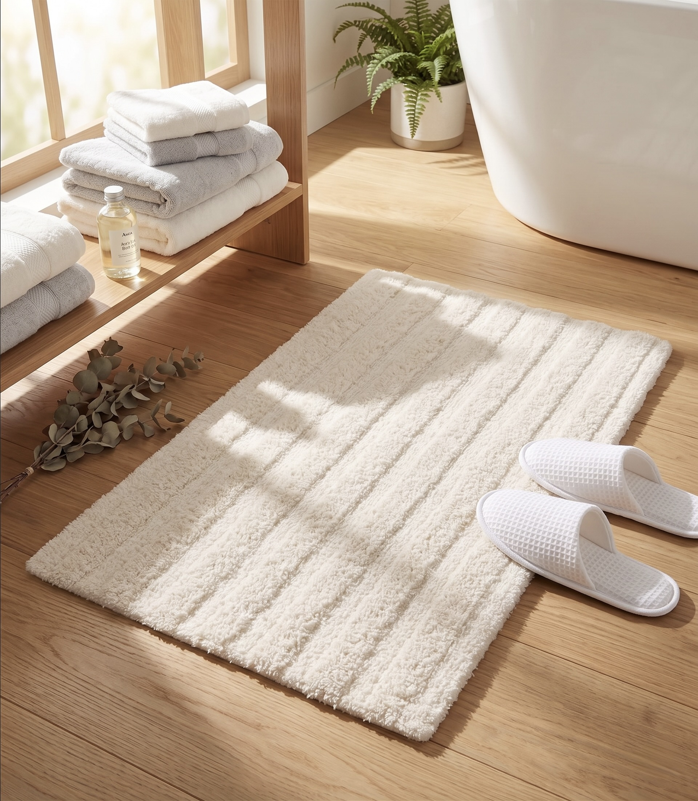
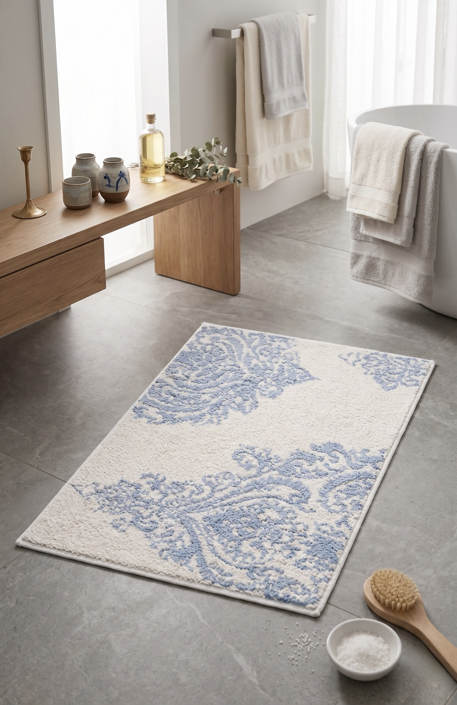
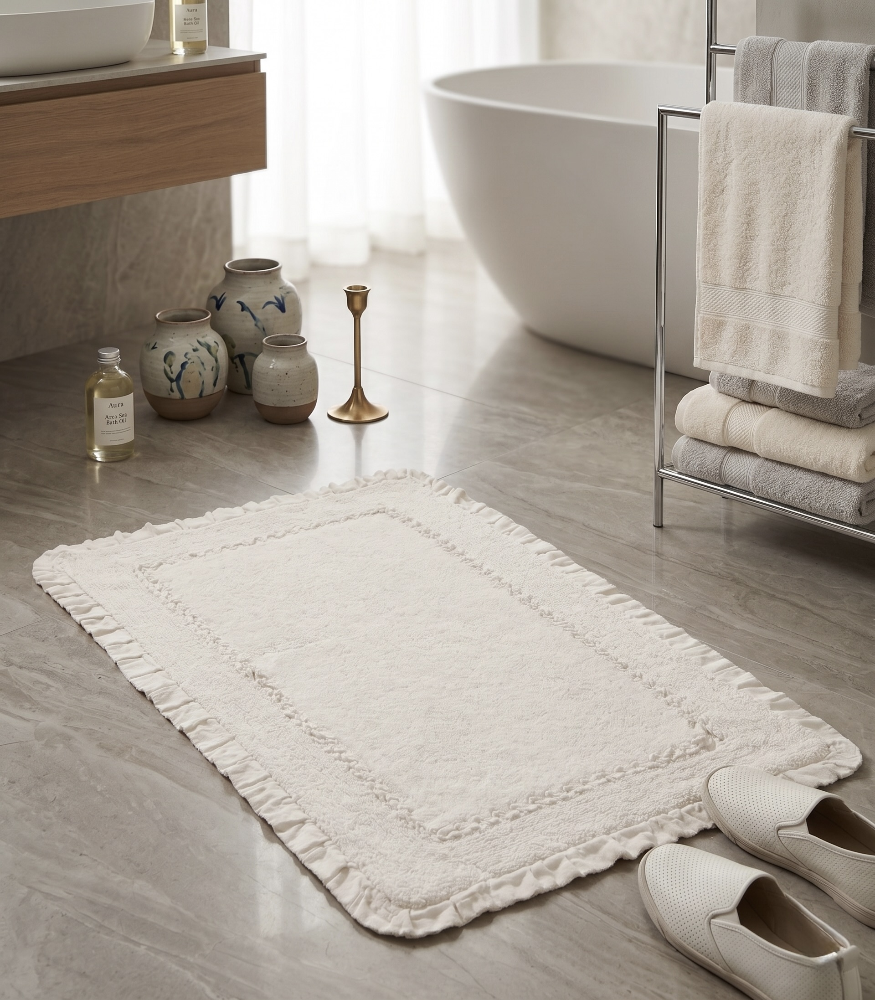
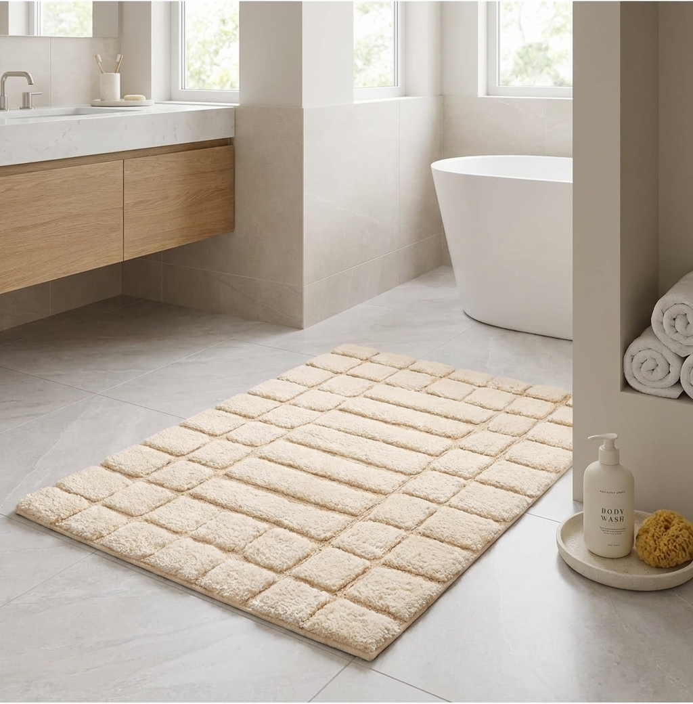
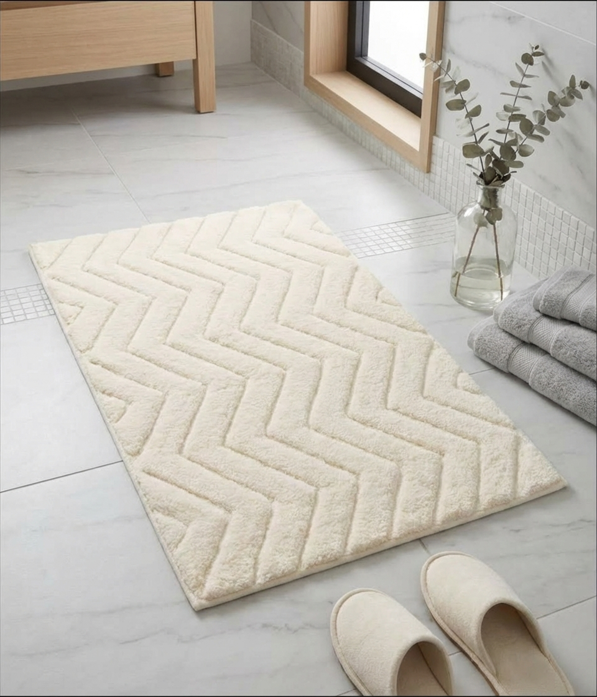
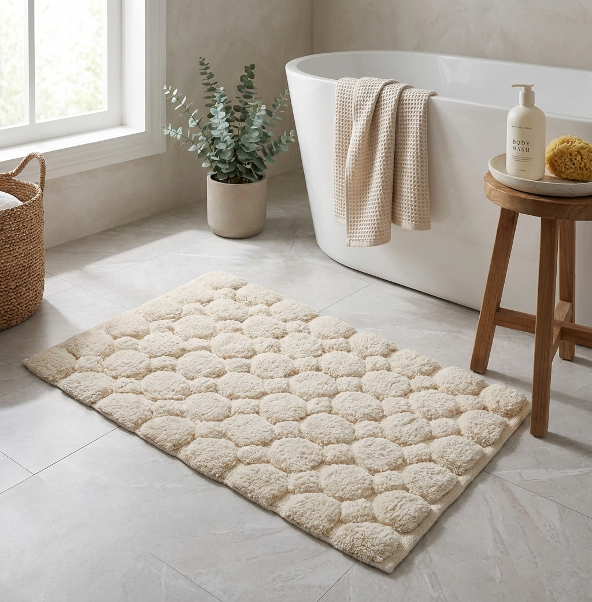

Bath Collection
OEKO-TEX Certified Bathmats and Shower Curtains
Bath Collection
The bathroom deserves the same quality of textile as any other room. Our bath collection focuses on what we do best — beautifully constructed bathmats in cut & loop, tufted and embroidered techniques, and shower curtains in cotton and cotton-blend fabrics with custom print and pattern options. All OEKO-TEX certified, produced for wholesale retail and hospitality programmes.
Bath Collection
Primarily crafted in 100% cotton and cotton-blend yarns, with options in polyester, bamboo and viscose for specific performance requirements. Produced using tufting, cut & loop and embroidery techniques. Non-slip latex backing available. Standard sizes 50x80cm and 60x90cm; custom dimensions for hospitality contracts.
AH-BT-BM-001
The cut & loop pile construction creates a two-level texture that is both visually striking and highly absorbent. 100% ring-spun cotton, with a dense pile weight that reads luxurious underfoot. A reliable, premium-feeling choice for lifestyle retail and mid-to-upper hospitality.
AH-BT-BM-002
A flat-woven cotton bathmat with hand-embroidered border and motif detailing — decorative enough for boutique retail, functional enough for daily use. Designs available in botanical, geometric and custom patterns. A strong seller for premium bathroom gifting and lifestyle retail.
AH-BT-BM-003
A contemporary combination of tufted pile and flat-woven sections that creates bold geometric or stripe effects with real textural depth. The contrast between pile heights gives a graphic, considered look that appeals to modern interiors buyers. Dense cotton construction, ultra-absorbent.

AH-BT-BM-004
Dusty rose-blush tufted bathmat with a horizontal ribbed stripe texture and a delicate dotted stitch border detail in a tonal deeper shade. The warm, muted pink palette is highly versatile — equally at home in a boutique hotel bathroom and a premium lifestyle retail range. Dense pile, ultra-absorbent cotton construction.

AH-BT-BM-005
Elegant ivory tufted bathmat with a scalloped/wavy outer edge and a raised rectangular tufted border frame inside — the shaped silhouette sets it apart from standard rectangular bathmats. Clean, tonal and quietly luxurious. Exceptional appeal for premium interiors retail, boutique hospitality and gifting programmes. Available in natural, ivory and ecru.

AH-BT-BM-006
Thick, plush cream bathmat with a raised vertical ribbed stripe construction — deep pile, extraordinarily soft underfoot and highly absorbent. The ribbed texture gives it a spa-like quality that justifies a premium price point. A high-volume staple for lifestyle retail and upper-tier hospitality where the feel of the product is as important as the look.
AH-BT-BM-007
Natural/cream tufted bathmat with an all-over raised cobblestone pebble pattern — each rounded form individually tufted to create a tactile, organic surface that massages the feet. Simultaneously functional and decorative. The pebble motif gives it a spa-wellness appeal that resonates strongly with contemporary interiors buyers and premium bathroom retail.

AH-BT-BM-008
Crisp white bathmat with a cut-pile blue damask baroque medallion pattern — a statement piece for bathrooms that want personality without sacrificing practicality. The blue and white palette is a perennial favourite for coastal, classic and boutique interiors. Dense cotton pile, excellent absorbency. A strong premium retail proposition and a visual standout in any bathroom range.

AH-BT-BM-010
Ivory flat-woven cotton bathmat with a generous ruffled/fringe border trim all around — decorative, romantic and distinctly different from standard tufted options. The ruffle edge gives it a boutique, feminine character that appeals strongly to lifestyle retail, gifting and premium bathroom collections targeting a female audience. A standout piece that earns display prominence.

AH-BT-BM-011
Warm ivory tufted bathmat with an all-over raised brick-grid pattern — rows of individual rectangular tufted blocks creating a structured, architectural surface that is highly tactile underfoot. The tonal ivory palette and geometric precision make it a natural for contemporary, minimalist and Scandinavian-influenced bathroom ranges. Dense cotton pile, excellent absorbency.

AH-BT-BM-012
Crisp ivory bathmat with a bold all-over chevron/zigzag relief pattern tufted throughout — the sharply defined V-shapes create strong graphic impact while maintaining a clean, neutral palette. The dimensional tufting adds real tactile depth. A versatile, design-led piece with broad appeal across contemporary, coastal and boutique hotel bathroom programmes.

AH-BT-BM-013
Luxuriously plush cream bathmat with an all-over raised circular bubble pattern — large, rounded tufted circles covering the entire surface to create an extraordinarily soft, cloud-like feel underfoot. The organic circular forms give it a spa-wellness character that resonates strongly with premium lifestyle retail and upper-tier hospitality buyers. One of our most tactile constructions.
Bath Collection
Cotton and cotton-blend shower curtains with water-resistant finish. Available in plain, yarn-dyed stripe, block print and digitally printed options. Standard 180x200cm and custom sizes. Buttonhole header as standard; eyelet and tab-top on request. Matching bathmat programmes available.
AH-BT-SC-001
Classic yarn-dyed stripe in a cotton-blend fabric with a water-resistant finish. The kind of timeless bathroom staple that works across price points — from boutique hotel to lifestyle retail. Available in a range of stripe colourways including navy, sage, terracotta and grey. Sold individually or with matching bathmat.
AH-BT-SC-002
Cotton shower curtains with hand block-printed or digitally printed designs — botanicals, geometrics, abstract and custom artwork. A product category with strong appeal to independent retailers and online home décor brands. Water-resistant coating, buttonhole header. Custom print development available for trade orders.
Request samples of our bathmat and shower curtain range, or speak to us about developing a coordinated bath collection for your brand.
Explore More Collections
From bedding to bath, kitchen to floor coverings — every textile we make is woven, printed or hand-finished in our Panipat facility under the same nine international certifications.
Soft Furnishings
Embroidered, tufted, woven and printed cushions for global retail and hospitality programmes.
Explore Cushions →Signature Collection
Quilts, bedspreads, duvet covers and sheet sets — GOTS organic and BCI cotton on request.
Explore Bedding →Kitchen & Dining
Tea towels, aprons, table runners, placemats and chair pads in cotton and linen blends.
Explore Kitchen →Soft Furnishings
Block print, bouclé, stripe and pom-pom throws woven in cotton and recycled blends.
Explore Throws →Floor & Seating
Handcrafted pouffes and floor seating in cotton, recycled blends and mixed textiles.
Explore Pouffes →